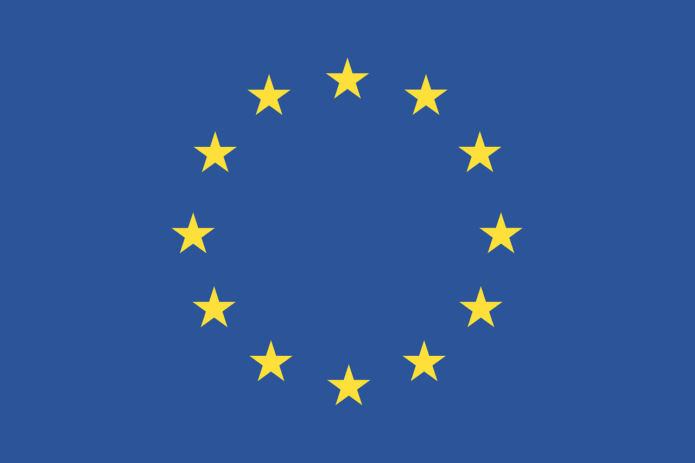
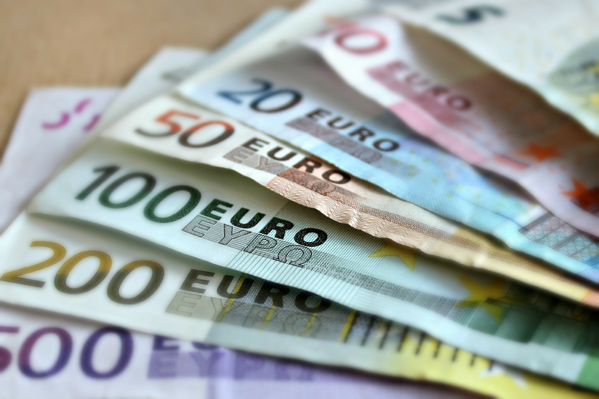

ПОСОЛ ЕС СДЕЛАЛ ЗАЯВЛЕНИЕ НАСЧЕТ ВСТУПЛЕНИЯ УКРАИНЫ В ЕВРОСОЮЗ
Европейский союз на сегодня столкнулся с рядом проблем, которые он должен решить, прежде чем поднимать вопрос о вступлении в блок новых стран Об этом в четверг во время панельной дискуссии в Киеве заявил посол ЕС в Украине Хью Мингарелли, передает "ДС" со ссылкой на УНН.

"В статье 49 договора Европейского Союза подчеркивается, что любая европейская страна, которая будет обладать определенными критериями, связанными с верховенством закона, демократией и свободой, может претендовать на вступление в ЕС. Второй момент - Украина европейская страна, вы - центр европейского континента. Третий момент - ЕС сегодня не в состоянии предложить перспективу членства любой новой, дополнительной стране. Прежде всего, мы должны решить ряд проблем в ЕС. Четвертый момент - Украина все еще выполняет условия, которые позволят претендовать на членство в ЕС", - почеркнул посол.
Болгария

Премьер-министр Болгарии Бойко Борисов заявил в Софии,что его страна все еще стремится перейти на евро до 2022 года, несмотря на сопротивление части местных предприятий. Борисов считает, что одним из главных преимуществ присоединения к еврозоне является то, что банковская система Болгарии станет более дисциплинированной: крупные банки в Болгарии будут контролироваться Европейским центральным банком, а не национальными органами власти, которые могут быть менее придирчивыми, передает радио Свобода. Вице-президент Европейской комиссии Валдис Домбровскис, который отвечает за общую валюту ЕС, приветствовал намерения болгарской власти.